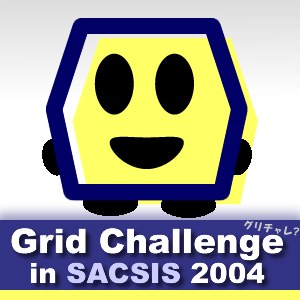
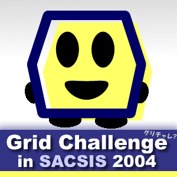
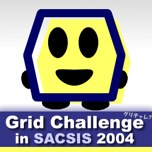

Grid Challenge in SACSIS 2005
別のファイル
ここに内容がきます。
小見出し
でっかくポスター。


menu
what's new
Last update:Tuesday, 30-Nov-2004 15:18:59 JST
Grid Challenge in SACSIS 2005 |
|
別のファイル
ここに内容がきます。
小見出し
でっかくポスター。
 |
menuwhat's new |
|
Last update:Tuesday, 30-Nov-2004 15:18:59 JST |
|